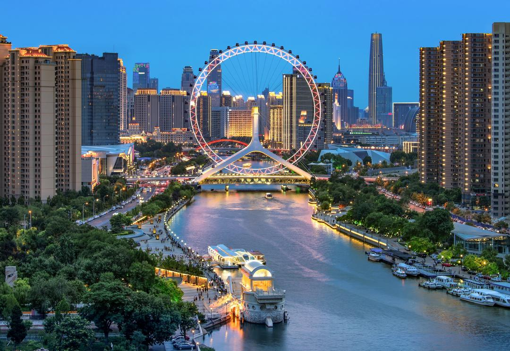
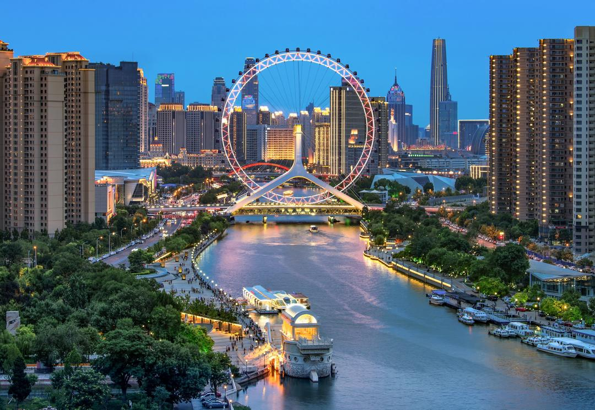

О Китае
Китай — это одна из наиболее развитых стран в мире, где сегодня проживает почти 1,5 миллиарда человек ( почти первое место в мире по численности населения, на 16.02.23). В Китае живет множество мигрантов из разных стран, особенно он популярен среди студентов и молодежи. Далее мы расскажем про уровень жизни в Китае, плюсах и минусах проживания там. Постараемся разобраться, почему так много иностранцев предпочитает жить в Китае, а не в своем родном государстве.
В списке Индекса человеческого развития (он рассчитывается на основе нескольких показателей — здоровье и долголетие, знания и достойный уровень жизни) Китай занимает 67-е место из 152 возможных, это средний показатель индекса. Россия же расположена на 42-й строчке. Если рассматривать показатель Индекса качества жизни (он рассчитывается исходя из данных 9 основных показателей — здоровье, образование, семейная и общественная жизнь, климат и география, политическая стабильность и безопасность и т. д), то тут Китай занимает 14-ю строчку из 80 возможных, а Россия расположена на 72-й позиции в рейтинге. Многие иностранцы, общаясь с китайцами, часто отмечают, что китайский менталитет во многом — полная противоположность европейскому. Чтобы хоть немного понимать китайцев и их особенности жизни, нужно прожить в Китае как минимум несколько лет. Многие считают китайцев недружелюбной нацией, но на самом деле они привыкли держать все свои эмоции при себе. Тут не принято улыбаться незнакомцам или вести ничего не значащие беседы. Жители Китая часто опаздывают, в основном из-за пробок, стоять в которых порой приходится по несколько часов. Но также по опозданиям можно судить о том, насколько для китайца важна встреча. Если она действительно имеет для него большое значение, то он скорее придет на час раньше, чем опоздает хотя бы на минуту.
Плюсы и минусы жизни в Китае
Перед переездом в Китай обязательно нужно взвесить все плюсы и минусы жизни в этой стране, ознакомиться с отзывами местных жителей, чтобы понять, стоит ли переезжать или жизнь в Китае совсем не для вас. Плюсов проживания в Китайской народной республике хватает, ведь не зря же там проживает столько иностранцев. Основными преимуществами жизни в Китае можно назвать следующее:
- Жизнь в Китае стоит немного дешевле, чем в странах Евросоюза. А по качеству жизни он не уступает многим европейским государствам, а ряд из них даже превосходит.
- В Китае мощная развитая экономика. В крупных городах вроде Пекина, Гуанчжоу или Шанхае без проблем можно найти работу. Причем устроиться можно и на высокооплачиваемую, где требуются высококвалифицированные специалисты, и на ту, где образование не играет никакой роли, нужно лишь желание работать и трудолюбие. Для устройства на низкооплачиваемую работу необязательно знание китайского языка (в некоторых случаях не нужен даже английский).
- В Китае отлично развита инфраструктура и система общественного транспорта. Многие приезжие в первое время даже теряются от такого количества магазинов, супермаркетов, торговых центров и баров с ресторанами. Они здесь построены на каждом шагу на любой вкус и кошелек. С общественным транспортом тоже нет никаких проблем — современные автобусы, высокоскоростные поезда, развитая сеть метрополитена. Но многие китайцы в последнее время предпочитают кататься на велосипедах, двухколесный транспорт есть практически в каждой семье.
- Дешевая одежда, бытовая техника и электроника. Ни для кого не секрет, что товары в Китае стоят значительно дешевле, чем в России или в Европе, ведь большинство из них производятся именно на китайских фабриках.
- Разнообразная кухня. В китайских кафе и ресторанах можно найти блюда всех стран мира. Тут большое разнообразие вкусов и товаров. Но поклонникам здорового питания в Китае может быть сложно — в большинстве своем еда здесь острая, жирная и калорийная.
Образование в Китае
Система образования в Китае во многом похожа на российскую и включает в себя несколько ступеней:
- дошкольное — это детские сады, куда принимают детей от 3 до 6 лет;
- начальное школьное образование — там детей обучают базовым дисциплинам, учат их коммуникациям;
- общее среднее образование — оно делится на две ступени: неполное и полное среднее образование (старшая школа);
- высшие учебные заведения — в них предусмотрено три варианта обучения: бакалавриат, магистратура и докторантура.
Говоря об образовании, лучшим местом получения образования в Китае, как для китайцев,так и для обучения иностранных студентов, будет город Тяньцзинь (天津). В 2019 году, будучи студентом Института Конфуция, я посетил Тяньцзиньский университет иностранных языков 天津外国语大学. Проделав большой путь по самостоятельному изучению китайского языка и культуры, я был приглашен правительством Китая на обучение и повышение уровня своих знаний. Для понимания хочу дать краткое описание самого языка. Китайский язык - имеет очень сложную структуру, отличную от других иностранных языков романской группы, как пример привел таблицу со структурой слов. Язык имеет 4 тональности. И в каждом регионе Китая свой диалект. Но основным является общепринятый стандарт - путунхуа (упрощенный китайский язык), в рамках которого общается большая часть Китая, и все СМИ обязаны взаимодействовать в рамках этого стандарта, игнорируя традиционную китайскую иероглифику (используется ,в основном, на Тайване, Гонконге и южных регионах Китая). Если мы взглянем на таблицу, мы можем увидеть ,с чем сталкиваются многие, это по сути изучение сразу 4 слов в одном иероглифе, и это многих останавливает.
| Иероглифы: | |||
|---|---|---|---|
| 你好 | ([nǐhǎo]) | "Ни(3)Хао(3)" | "Здравствуйте" |
| 我 | ([wǒ]) | "Во(3)" | "Я" |
За весь период обучения китайской стороной было организовано очень много интересных мероприятий и культурных программ. Процесс обучения давался очень просто и проходил на английском языке - насколько это было возможно, дело в том, что преподавательский состав не в полной мере им владеет, поэтому без предварительной практики и должного уровня знаний китайского языка можно столкнуться со сложностями. Среда, в которой приходилось пребывать, давала отличный практический опыт, который открывает много направлений для реализации себя в нынешних современных реалиях.
Достопримечательности
Тяньцзинь - по своей сути является буферной зоной между Желтым морем и Пекином. Это портовый город, в котором исторически проживала огромная смесь разных культур и народов. Поэтому этот город очень богат на архитектурные шедевры как прошлого, так и настоящего. Выше на фото представлено главное здание Тяньцзиньского университета иностранных языков, как пример типичной европейской архитектуры. Ниже на фото мы можем увидеть библиотеку Биньхай.
 Так же современным примером архитектуры является колесо обозрения, именуемое "Тяньцзиньский глаз" (кит. 天津之眼) ,по аналогии с не менее знаменитым "London Eye". Оно находится в самом центре города и расположено прямо на мосту.

В процессе обучения у нас была выездная экскурсия в Пекин, где была возможность посетить доступную для посещения часть Великой Китайской Стены (кит.长城).
Так же современным примером архитектуры является колесо обозрения, именуемое "Тяньцзиньский глаз" (кит. 天津之眼) ,по аналогии с не менее знаменитым "London Eye". Оно находится в самом центре города и расположено прямо на мосту.

В процессе обучения у нас была выездная экскурсия в Пекин, где была возможность посетить доступную для посещения часть Великой Китайской Стены (кит.长城).
О нас
Наши контакты Институт Конфуция МГУ им. М.В. Ломоносова 119991, Москва, Ленинские горы, д.1, стр.51 МГУ имени М.В. Ломоносова, Первый гуманитарный корпус МГУ, аудитория 542. E-mail: ci-msu@mail.ru Телефон: 8(495)409-60-51 Это не реклама